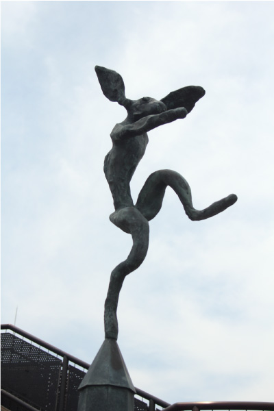

バリー・フラナガン

作者のバリー・フラナガンはウェールズ出身のイギリスの彫刻家。彼の代表作に「野うさぎ」シリーズがある。
その内の二作品が、ここ福岡にあり、早良区ふれあい橋にあるこの作品と、福岡市美術館にある
《三日月と鐘の上の跳ぶ野うさぎ》である。この作品は樋井川を挟んで、福岡PayPayドーム側と福岡タワー側の
両岸に一体ずつ設置され、それぞれが左右対称の形になっている。PayPayドーム側の作品には足に球がついており、
もう片方には球が付いていない。高く飛び跳ねるこの野うさぎはロシアバレエの名手「ニジンスキー」に擬人化され、
「左右対称のニジンスキー」であることから『ミラー・ニジンスキー』と名付けられた。